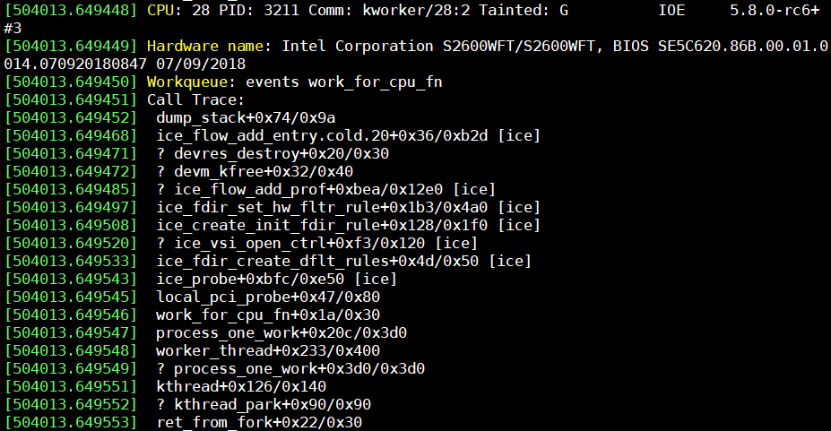
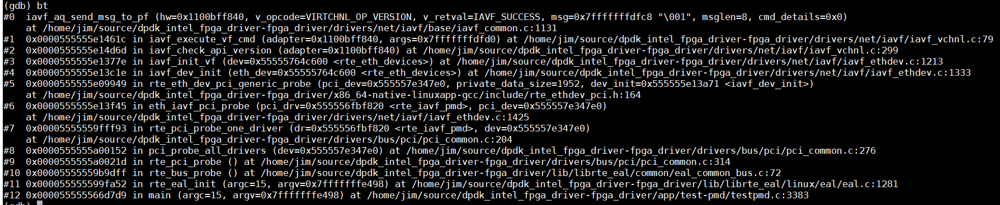
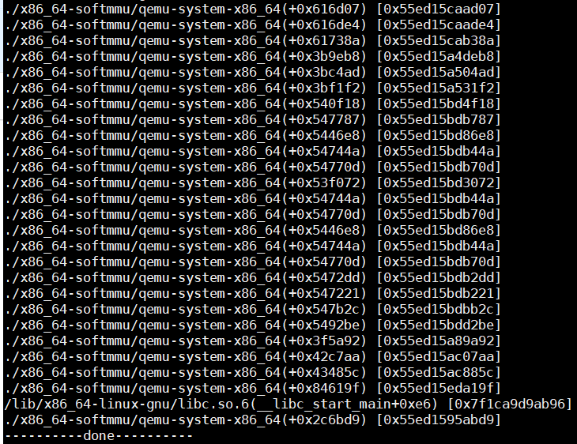
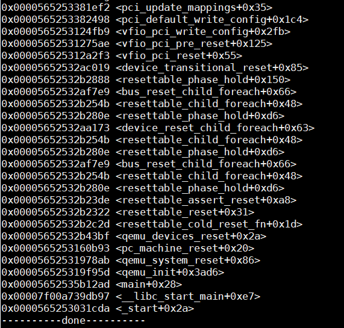

Dump function call trace in linux kernel/user
1. Introduction
This article gives description how to dump function call stack trace info in Linux. Which is very useful to debug and understand the running context.
Several ways are summarized to dump the trace info:
- For kernel space, It takes ice driver as an example to show how to dump function call trace in kernel space.
- For user space, it takes dpdk and QEMU as an example.
2. Target Audience
Developer/Validator with basic some development background
3. Function call tracing for Linux kernel
Kernel provides an function dump_stack() in lib/stack.c that can dump the current function call stack tracing info.
For example, if we want to dump the FXP FDIR/RSS function in shared code in Columbiaville, just add somewhere:
static struct ice_flow_prof *
ice_flow_find_prof_id(struct ice_hw *hw, enum ice_block blk, u64 prof_id)
{
struct ice_flow_prof *p;
+ dump_stack();
LIST_FOR_EACH_ENTRY(p, &hw->fl_profs[blk], ice_flow_prof, l_entry)
if (p->id == prof_id)
return p;
Then you can see the below kernel log which shows who is calling this function and who is calling this function's caller, and so on.

4. Function call tracing for Linux application
For function call tracing in linux user space application, there are quite some ways to do. I'll just share some quickest way.
4.1 GDB
use gdb command "bt" at breakpoint, you can see the call stack trace info.
4.1.1 Function call tracing for DPDK
Let's take dpdk testpmd for example, breakpoint is set at virtchnl message handler somewhere and then "bt" command is used to show call stack info as below:

4.2 backtrace
For some application that is not easy for gdb to debug or you don't want to set breakpoint, you may refer to the some library that provide the dumping method.
Backtrace is simple and easy except that it can't work with static function. So for code with static function, you will miss the call trace info which will only show the symbol address.
I'll skip the details since this is not a preferred method by me, but let's take qemu for example:

This is totally a disaster for debugger since qemu use lots of static function.
4.3 libunwind
To overcome backtrace's limitation which can't identify static function's symbol address, libunwind is the way and we are gonna talk more about this.
Add below my_backtrace()\ function to somewhere you want to trace, and you must add "-lunwind" to your linker option.
+#define UNW_LOCAL_ONLY // We only need local unwinder.
+#include <libunwind.h>
+static void my_backtrace(void)
+{
+ unw_cursor_t cursor;
+ unw_context_t uc;
+ // char buf[4096];
+
+ unw_getcontext(&uc); // store registers
+ unw_init_local(&cursor, &uc); // initialze with context
+
+ while (unw_step(&cursor) > 0) { // unwind to older stack frame
+ char buf[4096];
+ unw_word_t offset;
+ unw_word_t ip, sp;
+
+ // read register, rip
+ unw_get_reg(&cursor, UNW_REG_IP, &ip);
+
+ // read register, rbp
+ unw_get_reg(&cursor, UNW_REG_SP, &sp);
+
+ // get name and offset
+ unw_get_proc_name(&cursor, buf, sizeof(buf), &offset);
+
+ // x86_64, unw_word_t == uint64_t
+ printf("0x%016lx <%s+0x%lx>\n", ip, buf, offset);
+ }
+ printf("----------done----------\n");
+}
Add -lunwind link option in QEMU in configure is like below:
diff --git a/configure b/configure
index 23b5e93752..ce8c321f58 100755
--- a/configure
+++ b/configure
@@ -1643,7 +1643,7 @@ case "$cpu" in
# If we truly care, we should simply detect this case at
# runtime and generate the fallback to serial emulation.
CPU_CFLAGS="-m64 -mcx16"
- QEMU_LDFLAGS="-m64 $QEMU_LDFLAGS"
+ QEMU_LDFLAGS="-m64 -lunwind $QEMU_LDFLAGS"
;;
x32)
CPU_CFLAGS="-mx32"
diff --git a/hw/vfio/pci.c b/hw/vfio/pci.c
index 5e75a95129..3c84f98db2 100644
--- a/hw/vfio/pci.c
+++ b/hw/vfio/pci.c
Let's take qemu for example:

From this call stack trace info, you know all the context it is running which I think is really helpful in some cases that functions has too many caller and helpful for you to understand the overall running context.